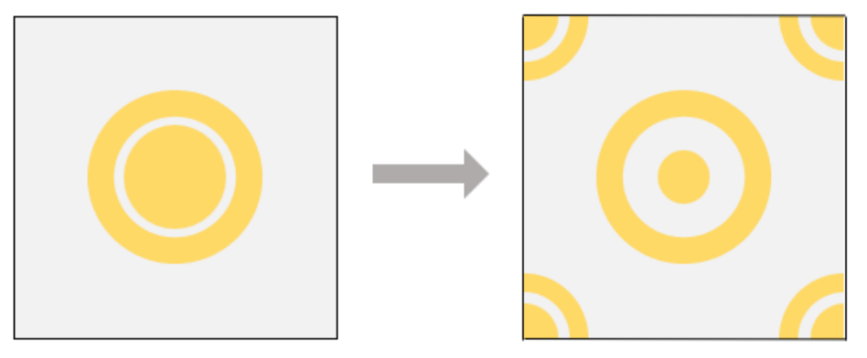
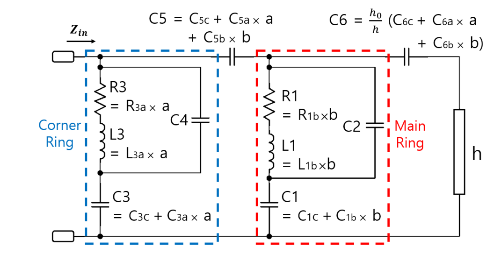
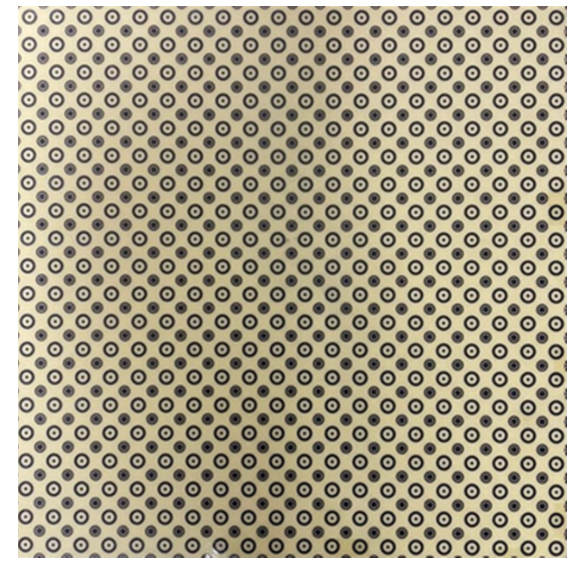
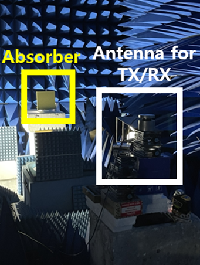
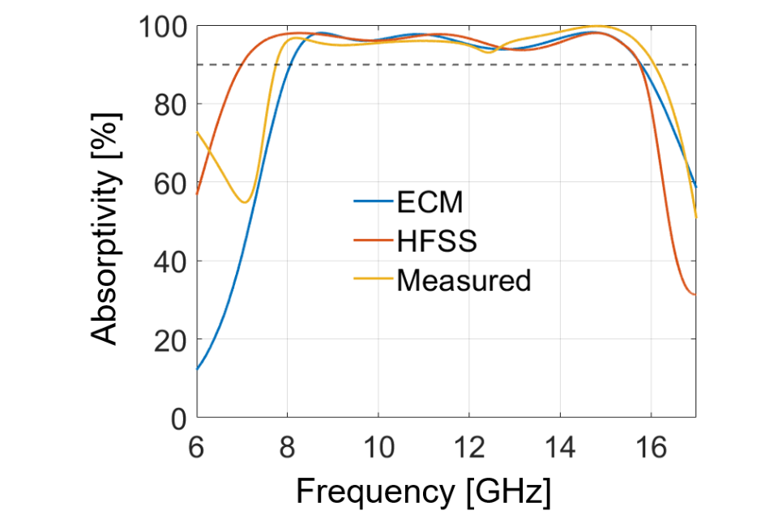

Research internship · Advisor: Prof. Jungsuek Oh
Developed an equivalent-circuit-assisted approach to accelerate absorber design exploration. A model calibrated to full-wave simulations links ring geometry to resonance and impedance, enabling low-cost circuit evaluations before full-wave validation of geometry updates.
What is a metasurface absorber?
A metasurface absorber is a thin, patterned structure that absorbs incident electromagnetic waves. Here, resistive rings dissipate the wave energy, impedance matching reduces reflection, and a metal backing blocks transmission.


Enlarge image ⤢

Enlarge image ⤢Measured result: A 3-mm-thick prototype demonstrated estimated absorptivity above 90% over 7.75–16.07 GHz at normal incidence.
Model assessment & experimental validation
Model assessment: Compared ECM and full-wave responses while varying ring geometry, substrate thickness, and sheet resistance. The model captures common trends within the investigated ranges, with residual differences in the detailed response.


Enlarge image ⤢

Enlarge image ⤢Experimental validation: Free-space reflection measurements used VNA calibration, time gating, and metal-reference normalization to estimate absorptivity. The prototype uses distributed resistive patterns without discrete lumped components.


Enlarge image ⤢Design and response figures reproduced from my first-author manuscript, currently under review at IEEE Access.
Related manuscript